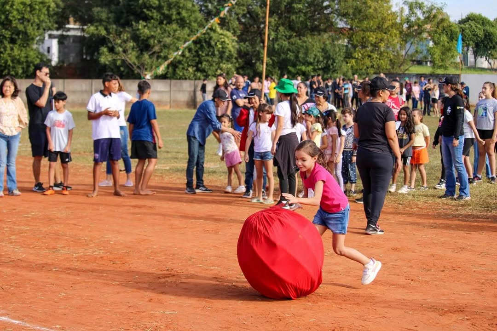
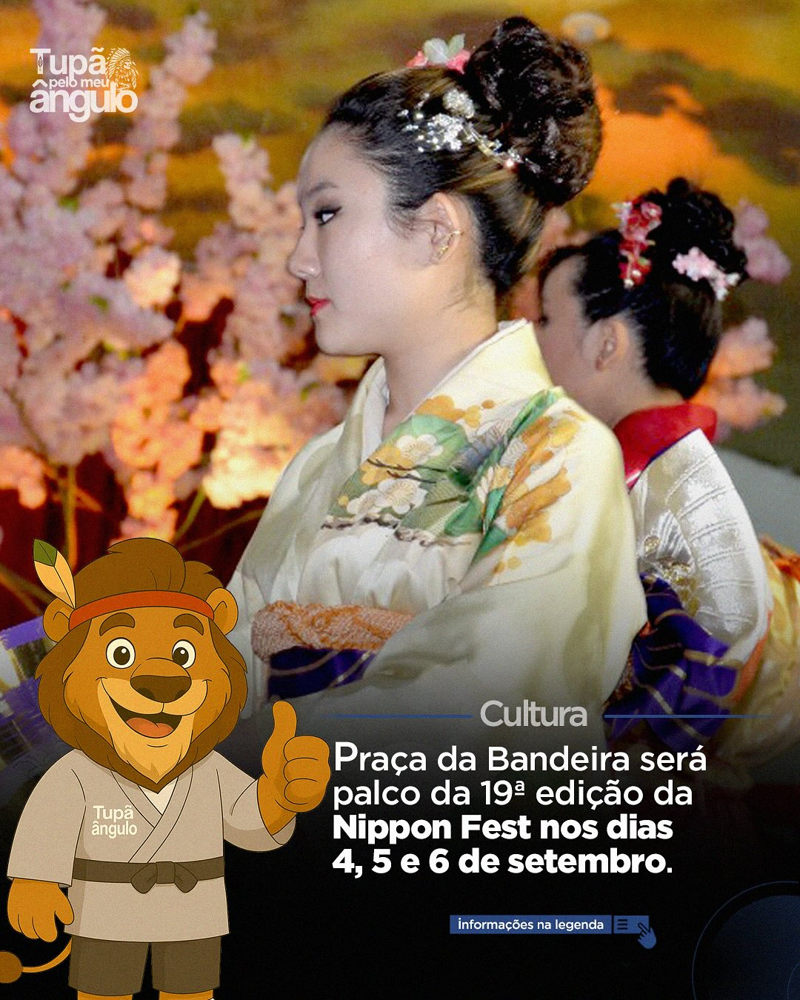

Cerca de 3 mil pessoas, entre crianças, jovens, adultos e idosos, participaram das competições do Undokai, tradicional gincana da colônia japonesa, que agora também integra o calendário oficial de eventos da Estância Turística. A gincana foi realizada no campo de baseball da ACERT no último domingo, dia 8 de julho, a partir das 7h30, logo após a Cerimônia de Abertura.
O evento contou com a presença do prefeito Ricardo Raymundo, do vice-prefeito Caio Aoqui, de secretários municipais, do Deputado Federal Walter Ihoshi e do vereador Eduardo Edamitsu, recepcionados pelo presidente da Comissão Organizadora do Undokai, Joaquim Katayama, e pelo presidente da ACERT, Newton Yoshihiro Takahara.
Foram disputadas 52 modalidades de jogos e gincanas, incluindo brincadeiras tradicionais e divertidas como “Procurar Pessoas”, “Lua de Mel”, “Corrida com Tamanco”, “Descascar Laranja”, “Catar Feijão com Hashi” e “Revezamento de Bandeiras”. O Undokai é realizado há mais de 40 anos em Tupã e simboliza a união das famílias e a preservação da cultura nipônica.
Todos os anos, a ACERT realiza o Iresai, uma cerimônia de reverência e gratidão aos antepassados que atravessaram o mundo em busca de uma vida melhor. O evento coincide com o Dia do Padroeiro São Pedro, em 29 de junho, e é marcado por um profundo respeito à memória dos pioneiros da colônia japonesa.
O ritual religioso é revezado entre as instituições Igreja Budista Nambei Honganji, Igreja Budista Hompa Honganji e Igreja Seicho-no-Ie de Tupã. Mesmo com o passar dos anos e a diminuição de descendentes, a ACERT se mantém firme na preservação das tradições japonesas.

Considerado um dos principais eventos da colônia japonesa da região, o Nippon Fest faz parte do Calendário Turístico de Tupã e do Estado de São Paulo. O festival reúne diversas atrações culturais, apresentações artísticas, exposições e uma ampla praça de alimentação com gastronomia típica japonesa, atraindo cerca de 3 mil pessoas por noite.
O Tenchō-setsu é uma celebração tradicional japonesa em homenagem ao aniversário do Imperador. Em respeito à história da comunidade nipo-brasileira, a colônia comemora nesta data o aniversário do Imperador Emérito Akihito (明仁天皇), celebrado em 23 de dezembro.
A cerimônia simboliza o respeito e a continuidade dos laços culturais com o Japão, reafirmando os valores de gratidão, harmonia e lealdade à tradição imperial japonesa. Durante o evento, são realizadas apresentações musicais, homenagens e orações de prosperidade para o Japão e a colônia japonesa no Brasil.